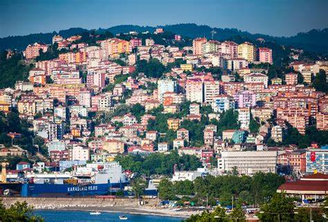
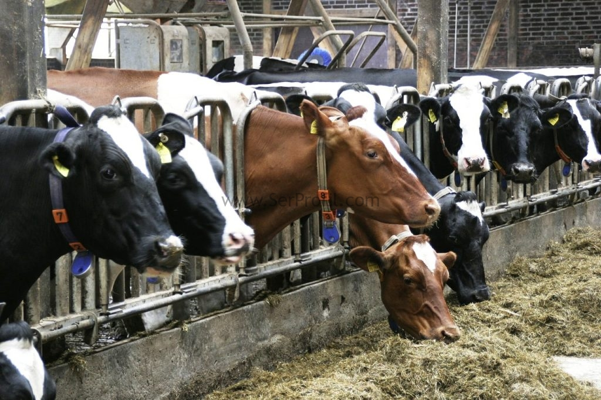
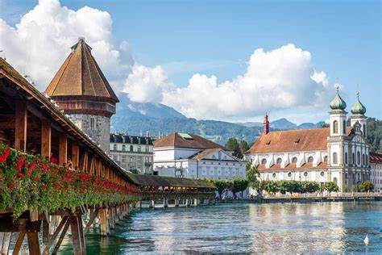

My City "Antalya" I was born on 10.12.1987 in Antalya. I completed my primary, secondary and high school education in Antalya. I became one of the most successful students in all the schools I attended. During this period, I was also interested in wrestling and football as an amateur. Because I was a village boy, I was good in swimming and hunting. Although there was an offer from a good football club, I decided to return to education only at my father's request. I got a good score in the university exam and won the English Mathematics Department of Zonguldak Karaelmas University.
City of Coal and Staircases "Zonguldak" In 2005, I started a life apart from my family for the first time: Univercity. I completed the mathematics department in 5 years, the first year of which was basic English. During this time, I took part in various aid organizations voluntarily and gave free lessons. I took the turkey-wide exam for post-university master's degree. I entered the interview with a high score of 88, a very good English score and a diploma grade. but I couldn't get accepted because I didn't have any important acquaintances at the university. Then, I completed my pedagogical formation required for teaching in 2011-2012.
First Job Experience In September 2011, I started as a teacher in a private education institution in Zonguldak. I was promoted to manager because I was successful in only 1 year and I worked as a manager and a teacher in the same institution until 2015. I always showed different and practical solutions to the students, not in the usual system. I taught a logicist, not a rote, and became a successful and loved person in a short time.
FIRST STEP INTO BUSINESS When I became a successful and loved one in my teaching career, I decided on a school to found that would evaluate children as human beings rather than as a race horse, which is innovative and intertwined with technology, apart from the classical system. I started with only 20 students in May 2015 and in just 1 year I became an institution with the most successful students in the province. Last year, all the important names had lined up to send their kids to my school.
Fall From Top to Bottom It's good that everything went well, but life isn't always fair. The government had gone mad and began sacking and jailing anyone who did not support it. I was arrested in July 2016 because the private company I worked for criticizes the government and I worked for that company years ago. And for this ridiculous reason, they took everything and sent me to prison. I was in prison for 1.5 years and unfortunately hundreds of thousands of people like me were in the same situation. Desperate and we couldn't do anything
Building a New Life A difficult life awaited me after prison. The government no longer allowed me to teach and confiscated all my property. I had a family and 3 young children, so I could not sit idle. In 2018, I started as a manager in a shopping company and was promoted in a short time. But the government forced this company and they fired me. For a while, I went to work for a daily wage. Then I decided to start a cow farm. I didn't know anything, but I could learn quickly. I started with only 3 cows and before I came to Switzerland I had about 50 cows. It was easy for me to come up with new practical ideas. It was enough for me to just understand the field I work in. I was successful in this Job in a short time.
Very Difficult Decision I made good money, but I didnt risk going back to prison. The government was increasing the pressure day by day. Worse still, my children were growing up and their future was not looking good either. I was also forbidden to go abroad. We were psychologically worn out and made a decision to Continiue in another country. It would be a very dangerous and difficult journey. I had to do this for my family. First, I went to Greece by escaping and then to Switzerland, which I have always heard good things about, and applied for asylum there.
A New World: Switzerland Switzerland first accepted me and then my family. 6 months later, my family came and we settled in Switzerland. From 0 level to b2 level in 2 years my german evolved . I bought Bootcamp from an American company and became a Fullstack Java Developer. At the same time, I got about 30 certificates from different places on the internet. I did an internship in both the backend and frontend department in the same company and now I only need one thing. A Job. i will find it and i believe it i will be successful in switzerland too
